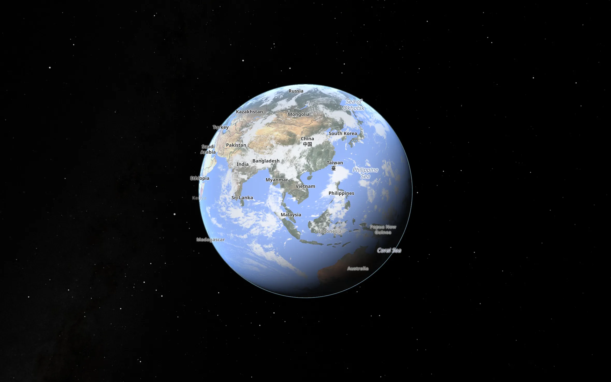
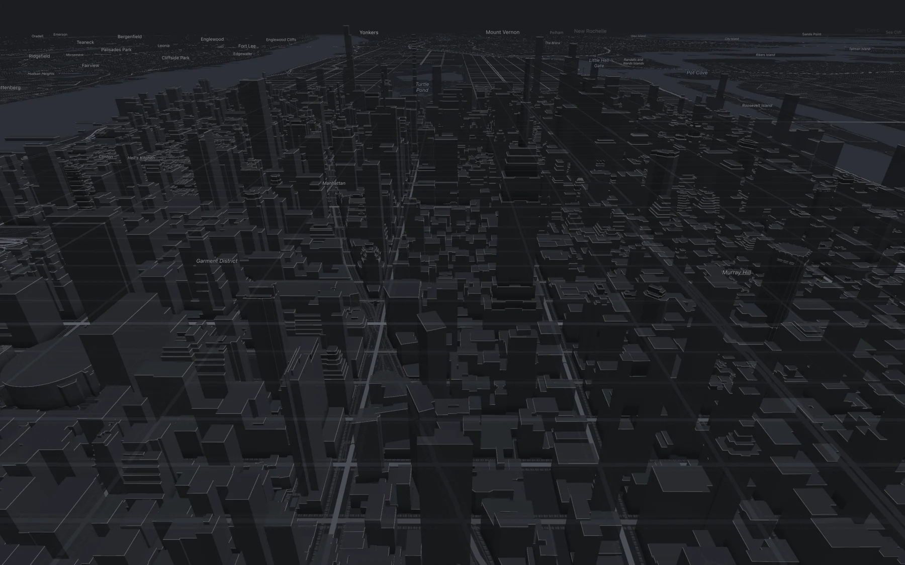
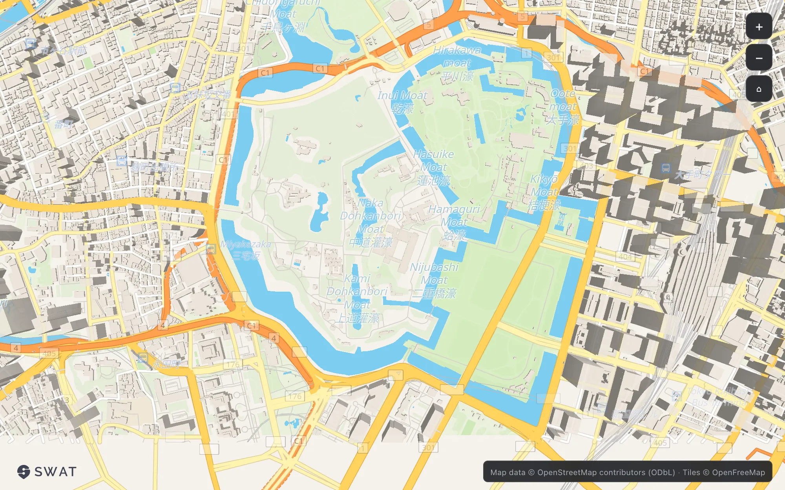
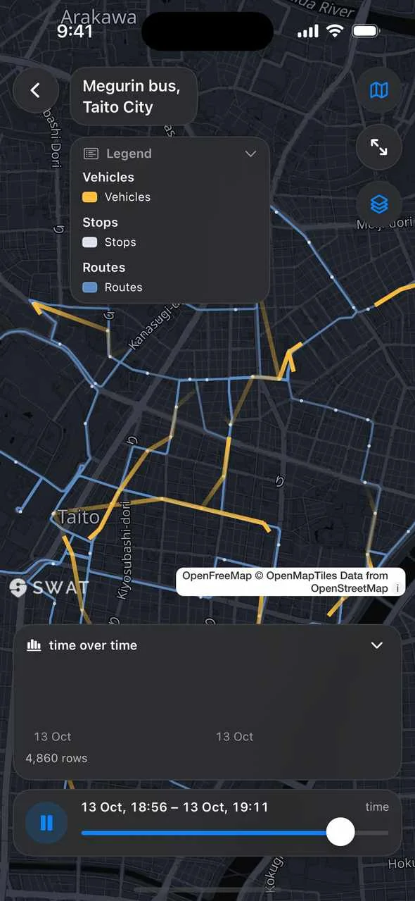

gpui-maps は Rust で書かれたベクター地図エンジンです。GPUI のウィンドウの中で GPU を使って描画し、同じコードが iOS でも、WebAssembly としてブラウザでも動きます。Web ビューも JavaScript も、アクセストークンも不要です。

© OpenStreetMap contributors · OpenFreeMap · Sentinel-2 cloudless by EOX · NASA
雲と夜と星のある地球全体から、通りの一本までズームできます。ドラッグで回転、ピンチ、または ⌘ か Ctrl を押しながらスクロールでズーム。 全画面で開く

3 つのコマンドで、最初の地図を。
リポジトリをクローンして、最初のサンプルを実行します。キー不要のオープンなベースマップで、シンガポールを表示するウィンドウが開きます。
$ git clone https://github.com/swatmobility/gpui-maps $ cd gpui-maps $ cargo run --example hello_map Compiling gpui-maps v0.8.0 Finished `dev` profile Running `target/debug/examples/hello_map`
use gpui_maps::basemaps::{self, Basemap}; use gpui_maps::map_view::MapView; let b = basemaps::load(Basemap::Liberty)?; let map = cx.new(|_| MapView::new( 103.85, 1.29, 12.0, 1024.0, 768.0, b.style, b.source, rt.clone(), ));
地図は GPUI のビューなので、ほかの要素と同じようにウィンドウに追加できます。スタートガイドを読む（英語）。
地図に必要なすべてを、ひとつのエンジンで。
上のライブ地図はその一部を使っています。ほかはサンプルとドキュメントにあります。
- タイル
- HTTP 経由のベクタータイル、PMTiles、MBTiles、ラスタータイル。
.pmtilesファイル 1 つで完全にオフラインで動作します。アカウントもキーも外部サービスも不要なので、閉域網でも使えます。 - データ
- GeoJSON、CSV、FlatGeobuf、GeoParquet、Cloud-Optimised GeoTIFF。ホバーとクリックで地物を選択できます。
- 可視化
- アーク、移動のアニメーション、ヒートマップ、六角形・グリッド集計、ドット密度、クラスタリング。
- 3D
- 大気と空のある地球儀、建物の立体表示、glTF モデル。
- ナビゲーション
- Ferrostar の Rust コアによるターンバイターン案内。曲がる地点の案内、リルート、追従カメラをエンジンが描画します。
- キャプチャ
- カメラやスクリプト化した地図ストーリーを、ウィンドウなしで PNG や動画に書き出せます。
- ビッグデータ
- ドット密度と H3 六角形のレイヤーが、ClickHouse からタイルをリアルタイムに読み込みます。読み取り専用で、SQL ガードを通します。
- ダッシュボード
- 地図と連動するチャートを、SQL を含む 1 つの JSON ファイルで定義。ClickHouse と Postgres に対応（
swat-maps-dash）。 - カタログ
- オープン地理データの STAC 1.1 カタログを、ライセンス情報とともに地図レイヤーとして読み込みます（
swat-maps-stac）。
コーディングエージェントが、地図を操作できます。
gpui-maps で作ったアプリは、自身の機能を説明するローカル HTTP ポートを開けます。エージェントはアクションの一覧を取得して呼び出し、地図の状態を JSON で読み取ります。スクリーンショットなしで、地図の移動、確認、テストができます。
$ GPUI_MAP_AGENTIC_PORT=7334 cargo run --example basic_map &
$ claude
> 東京駅に移動して、建物が見えるように傾けて。
● Bash(curl -s localhost:7334/ | jq -c '[.actions[].name]')
⎿ ["map.state","map.tiles","map.layers",…,"map.fly_to",…]
● Bash(curl -s -X POST localhost:7334/map/fly_to \
-d '{"lon":139.7671,"lat":35.6812,"zoom":16,"pitch":60,"ms":1500}')
⎿ {"ok":true,"camera":{"lon":139.7671,"lat":35.6812,"zoom":16.0,
"pitch_degrees":60.0,"bearing_degrees":null},"eased_ms":1500.0}
● 東京駅の上空、ズーム 16 で 60° 傾け、建物を立体で表示しました。
描画内容は map.state で確認できます。
- 自己記述型。
GET /がすべてのアクションをメソッド、パス、パラメーター付きで返すので、エージェントが古い一覧に頼ることはありません。 - ローカル限定。 ポートは 127.0.0.1 にのみバインドされ、アプリが有効にしない限り開きません。
- 再利用できる。
gpui-agentic-httpクレートで、どの GPUI アプリにも同じ仕組みを追加できます。Claude Code 用の MCP サーバーとスキルも付属します。
Claude Code につなぐ。
アプリをエージェント用ポートを開いて起動し、どちらか、または両方を使います。gpui-agentic-http を使ったほかの GPUI アプリでも同じです。
$ cargo install gpui-agentic-http $ claude mcp add gpui-maps -e AGENTIC_HTTP_PORT=7334 \ -- agentic_mcp_server
アプリのアクションがすべて Claude Code のツールになります。アクションを追加すれば、ツールも自動で増えます。
$ mkdir -p .claude/skills $ cp -r gpui-agentic-http/skills/agentic-app \ .claude/skills/
Claude Code がアプリのポートを自分で見つけ、HTTP でアクションを呼び出します。設定は不要です。
どこでも Rust：デスクトップ、モバイル、WebAssembly。
Rust と WGSL シェーダーで一度だけ書いたエンジンです。ネイティブの macOS ビュー、iOS アプリ、WebAssembly モジュールにコンパイルされ、どこでも同じ地図を描きます。



ライブ Web デモを開く 15 MB の WebAssembly モジュールを読み込みます。WebGPU に対応したブラウザをおすすめします。
SWAT Studio：すべてのサンプルをひとつのアプリで
エンジンのデモをまとめて開ける無料の Mac アプリです。スタイル、地球儀、3D 建物と車両、時刻表どおりに走る 25 の公共交通網、データ可視化、ClickHouse ダッシュボード、PMTiles、GeoParquet を収録しています。リポジトリのサンプルからビルドしています。
Mac 版をダウンロード すべてのリリース 無料。署名・公証済み。macOS 13 以降、Apple シリコンと Intel に対応。
リポジトリにはほかにも
swat-maps-doc地図ドキュメント形式：データセット、レイヤー、フィルター、スケール、ツールチップ。元に戻す・やり直しに対応。swat-maps-dashダッシュボード形式と、安全性を検査する SQL テンプレートコンパイラー。swat-maps-stacオープン地理データの STAC カタログを読むリーダー。
GPUI に依存しない純粋な Rust で、WebAssembly 向けにもビルドできます。